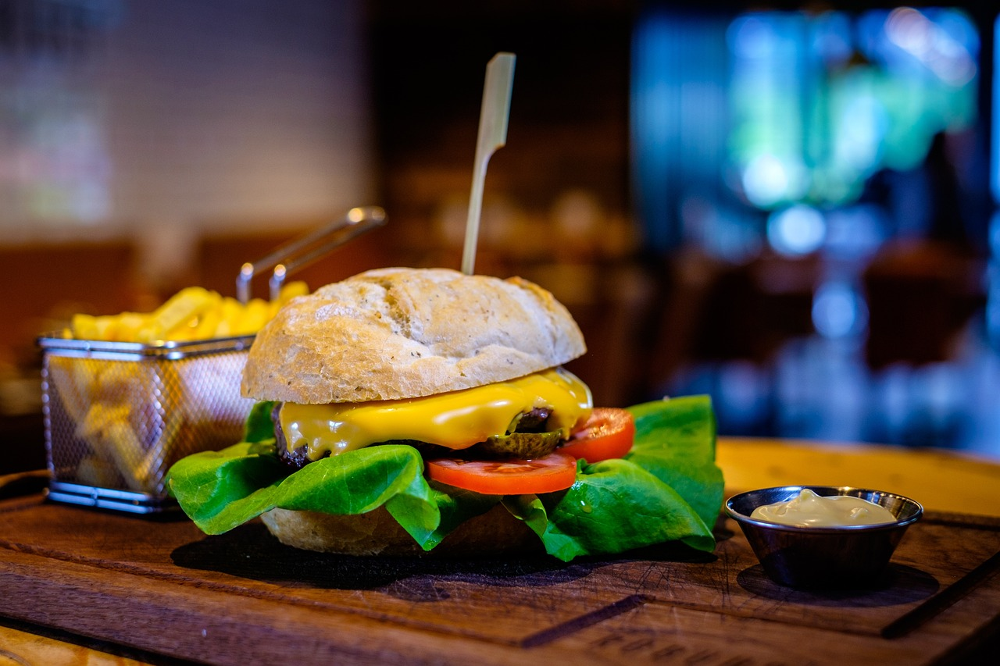

Cheeseburger

Description
Indulge in the ultimate American classic with this mouthwatering Cheeseburger recipe! Featuring a perfectly seasoned patty made from freshly ground chuck, succulent American cheese, and a variety of toppings, this dish is sure to satisfy your cravings.
Ingredients
- 1 tablespoon onion powder
- 1 teaspoon salt
- 1 teaspoon freshly ground black pepper
- 12 slices deli-counter American cheese
- 6 large burger buns
- Ketchup
- Mayonnaise
- Thousand Island dressing
- Sliced red onion
- Sliced tomatoes
- Sliced pickles
- Fresh lettuce leaves
Steps
- Combine ground beef, onion powder, salt, and pepper in a large bowl. Mix gently without overmixing.
- Divide the mixture into six portions and form patties, ensuring uniform thickness.
- Preheat your grill, grill pan, or cast-iron skillet to high heat. Cook the patties until the crust releases from the pan, then flip and add cheese. Cook until desired doneness.
- Assemble the burgers by placing the patties on buns and adding desired toppings.
- Enhance your cheeseburger experience with a variety of sauces and toppings, such as ketchup, mayonnaise, and Thousand Island dressing.